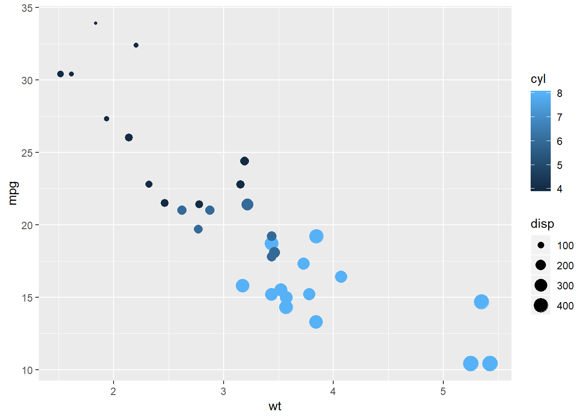

what if you have more than one predictor variable? For instance, let’s say you want to measure the effect of not just weight, but also the number of cylinders, and the volume, or displacement, of the car? We can get a sense of the trend by adding those two predictors to our visualization using color and size. Here we put the number of cylinders (cyl) as the color and the volume, or displacement (disp) as the size.:
ggplot(mtcars, aes(x=wt, y=mpg, col=cyl, size=disp)) + geom_point()
It’s true that cars with higher volume, or larger points, have a lower fuel efficiency- but they also have a higher weight.
What combination of predictors will best predict fuel efficiency? Which predictors increase our accuracy by a statistically significant amount?
We do this with a multiple linear regression, where we provide multiple terms in the right side of the linear regression formula.
mregr = lm(mpg ~ wt + disp + cyl, data=mtcars)
summary(mregr)##
## Call:
## lm(formula = mpg ~ wt + disp + cyl, data = mtcars)
##
## Residuals:
## Min 1Q Median 3Q Max
## -4.4035 -1.4028 -0.4955 1.3387 6.0722
##
## Coefficients:
## Estimate Std. Error t value Pr(>|t|)
## (Intercept) 41.107678 2.842426 14.462 1.62e-14 ***
## wt -3.635677 1.040138 -3.495 0.00160 **
## disp 0.007473 0.011845 0.631 0.53322
## cyl -1.784944 0.607110 -2.940 0.00651 **
## ---
## Signif. codes: 0 '***' 0.001 '**' 0.01 '*' 0.05 '.' 0.1 ' ' 1
##
## Residual standard error: 2.595 on 28 degrees of freedom
## Multiple R-squared: 0.8326, Adjusted R-squared: 0.8147
## F-statistic: 46.42 on 3 and 28 DF, p-value: 5.399e-11coefficient table now has four rows: one for the intercept and one for all three of our predictors. Each of these still contains the estimate of the coefficient, or slope, for that predictor.
Notice that the p-values for weight and the number of cylinders are both significant. We can see the significance rating based on the number of stars, where ** means it’s in between .001 and .01.
mcoff = coef(summary(mregr))
mcoff[ ,1]## (Intercept) wt disp cyl
## 41.107677641 -3.635677016 0.007472925 -1.784943519mcoff[, 4]## (Intercept) wt disp cyl
## 1.620381e-14 1.595519e-03 5.332173e-01 6.511676e-03We can also predict the gas mileage of each car based on this model, by doing
predict(mregr)## Mazda RX4 Mazda RX4 Wag Datsun 710
## 22.06821 21.14111 26.34021
## Hornet 4 Drive Hornet Sportabout Valiant
## 20.63733 17.01165 19.49998
## Duster 360 Merc 240D Merc 230
## 16.53902 23.46637 23.56771
## Merc 280 Merc 280C Merc 450SE
## 19.14375 19.14375 14.09196
## Merc 450SL Merc 450SLC Cadillac Fleetwood
## 15.32809 15.14630 11.26805
## Lincoln Continental Chrysler Imperial Fiat 128
## 10.54576 10.68352 26.55753
## Honda Civic Toyota Corolla Toyota Corona
## 28.66199 27.82776 25.90346
## Dodge Challenger AMC Javelin Camaro Z28
## 16.40694 16.61135 15.48265
## Pontiac Firebird Fiat X1-9 Porsche 914-2
## 15.83812 27.52323 27.08655
## Lotus Europa Ford Pantera L Ferrari Dino
## 29.17780 17.92603 21.41077
## Maserati Bora Volvo 142E
## 16.09811 24.76495Or we can do it for a new car: all we have to do is give it the weight, displacement and number of cylinders of our hypothetical car.
newcar = data.frame(wt = 4.5, disp = 300, cyl = 8)
newcar## wt disp cyl
## 1 4.5 300 8predict(mregr, newcar)## 1
## 12.70946